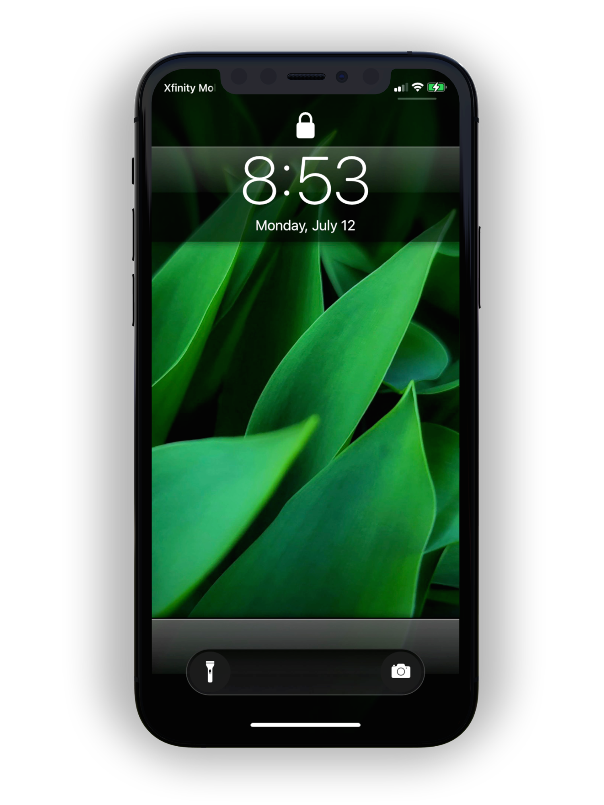
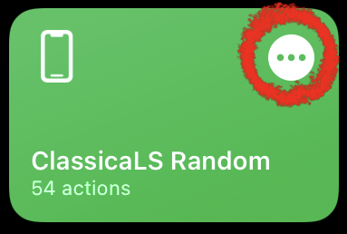
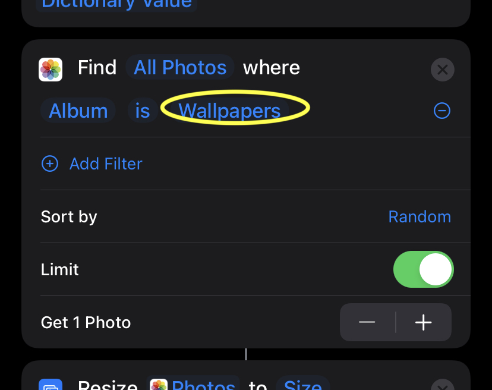

ClassicaLS
Just choose a photo when the shortcut asks and your lockscreen wallpaper will automatically set, giving you a feeling of beautiful nostalgia.
Download Shortcut
last updated: July 12th 2021
for iOS 15+
(notch devices only)
Want to use a random wallpaper from a specific photo album instead of choosing every time? Download this version instead. Edit the shortcut actions by tapping the 3 dots in a circle:

then scroll down in the actions to find the 'Find Photos' action and tap the album name to change the album to your choosing. (Assuming you have a wallpapers album)

If you enjoy any of my products, follow me on Twitter
@Polyphian